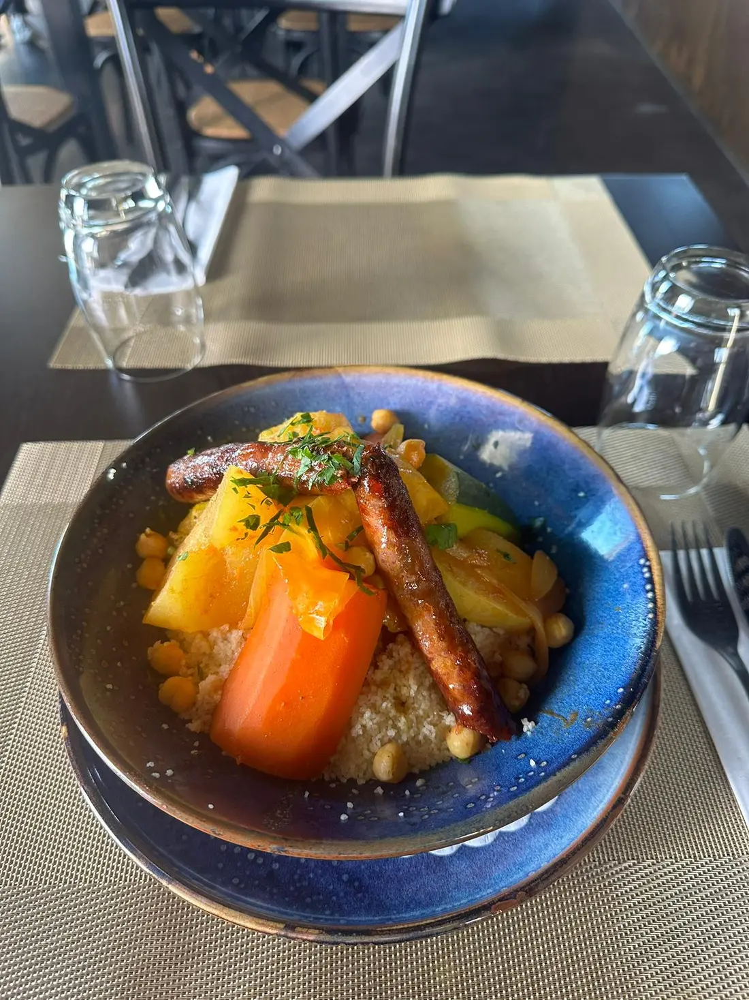
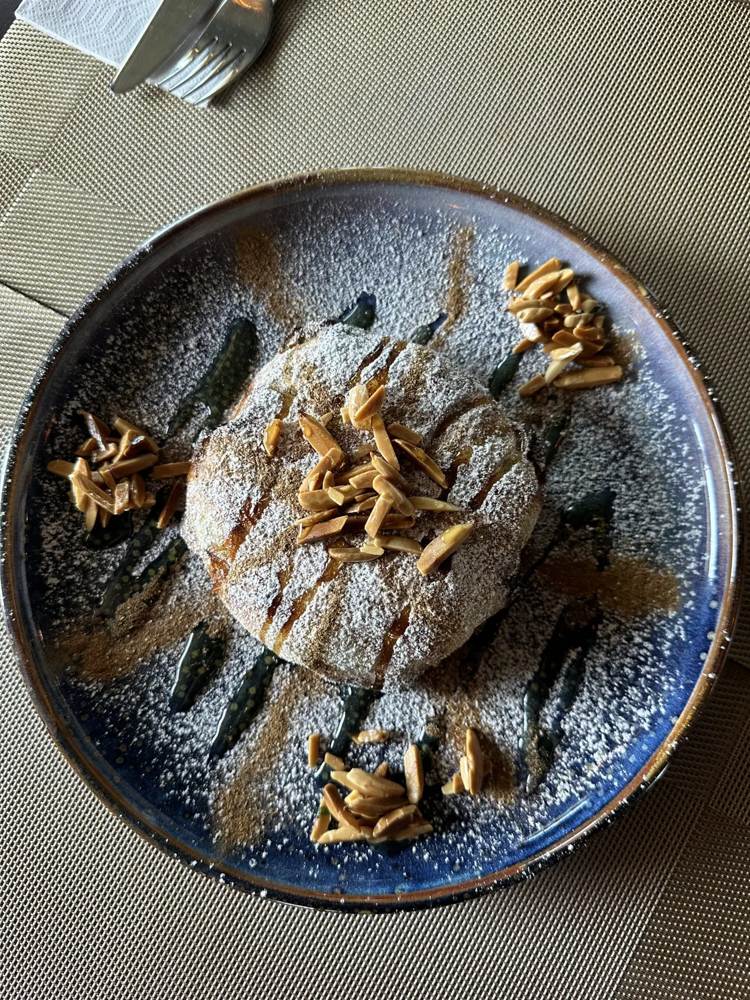
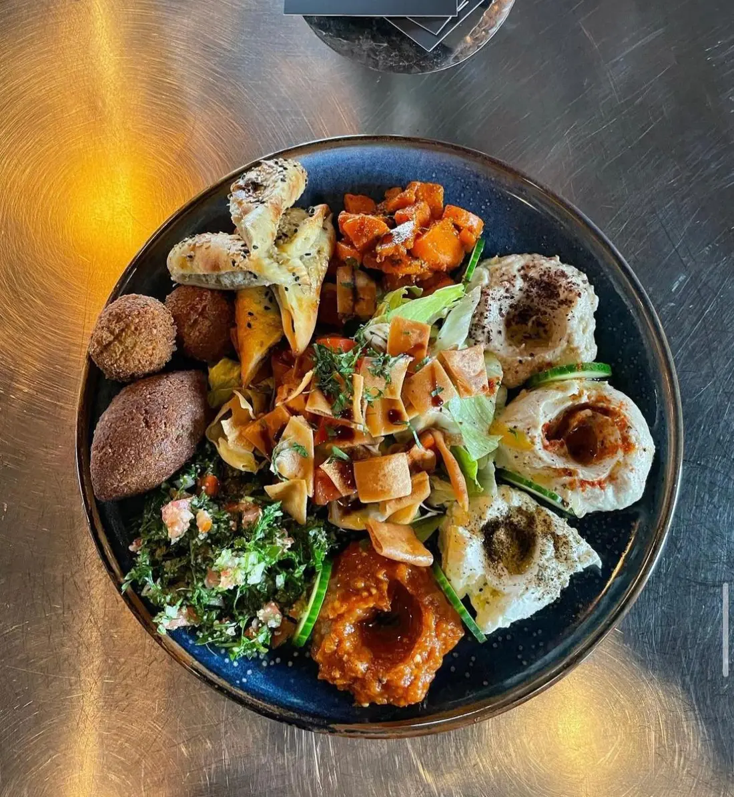
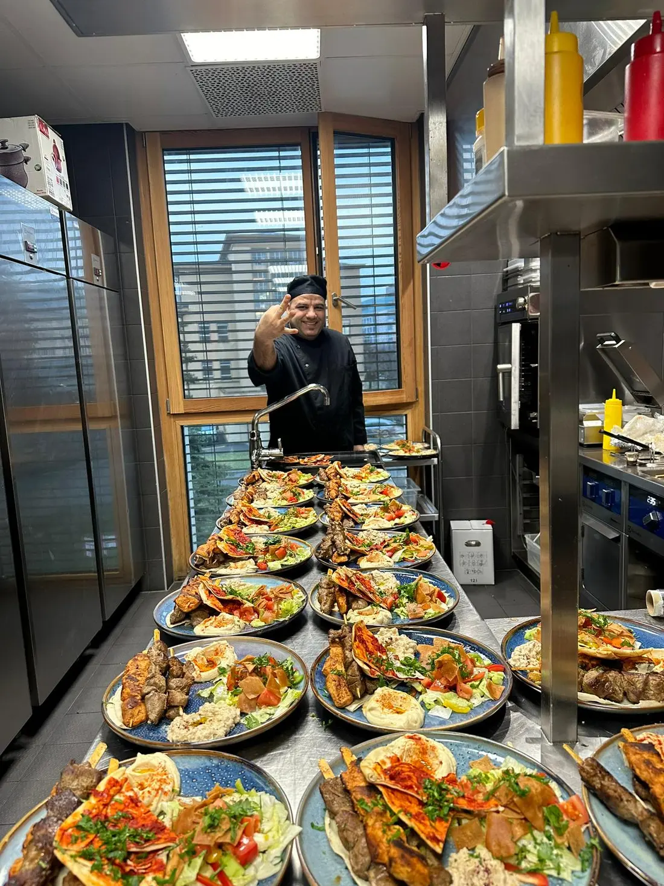
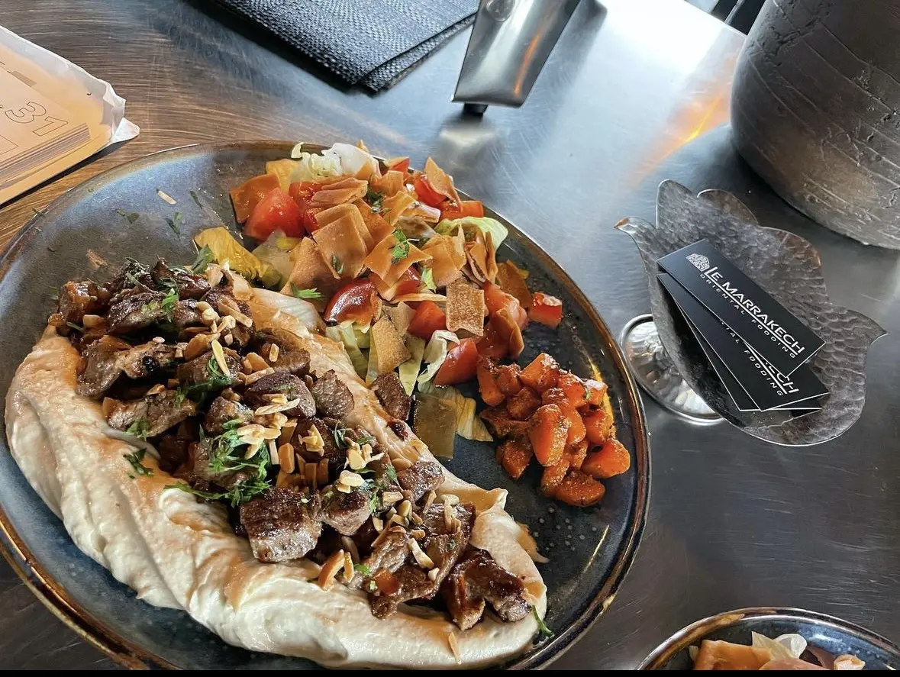
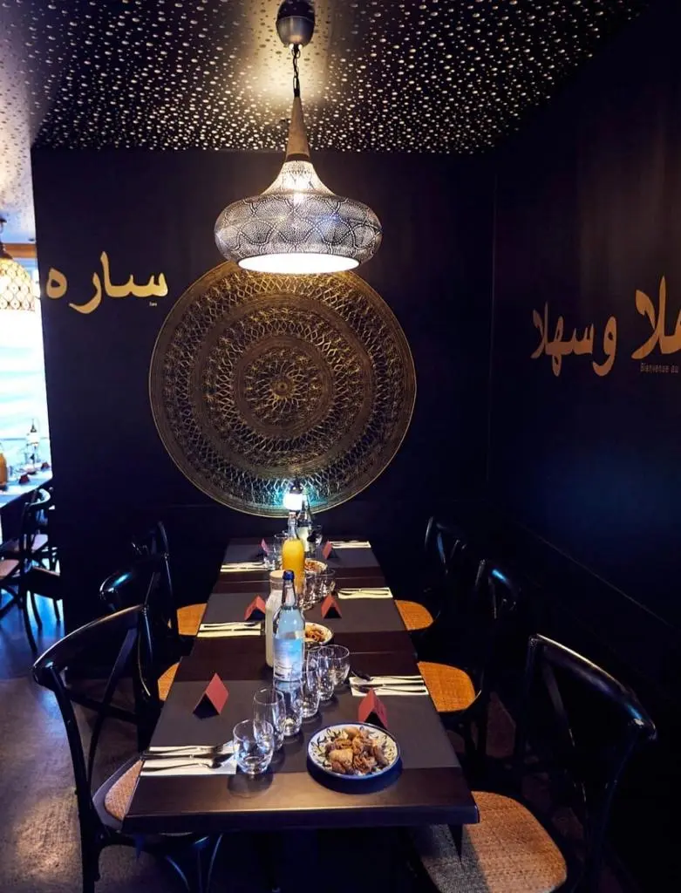
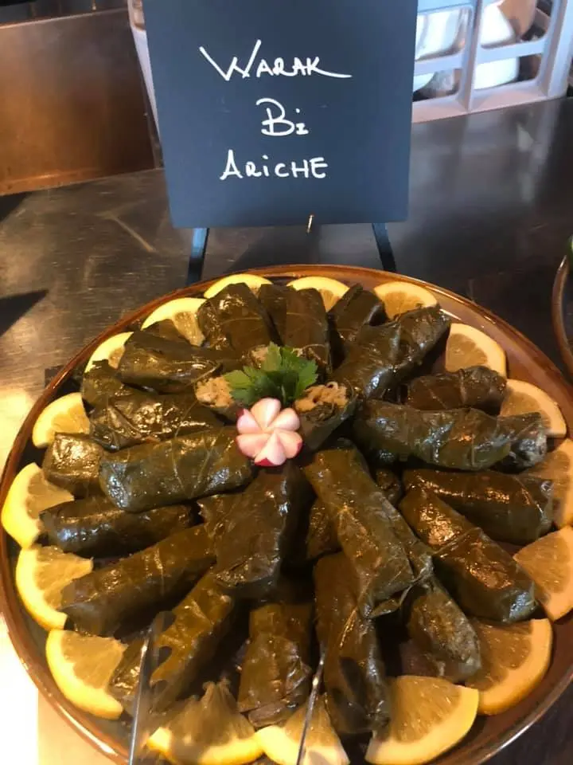
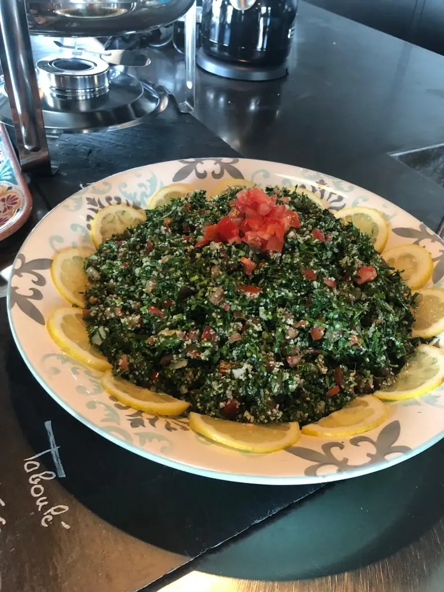
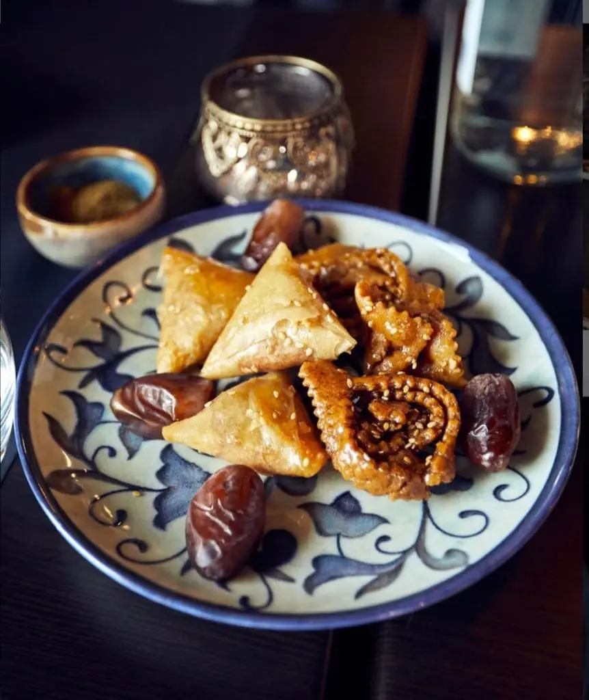
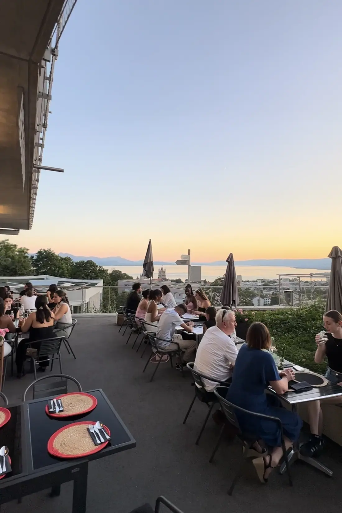

MarocTajines, couscous, pastilla
Tajine d'agneau aux pruneaux, tajine de poulet aux citrons confits, couscous aux sept légumes ou royal, et la soupe harira.

Lausanne · Cuisine marocaine et libanaise
Du couscous au tajine, des brochettes épicées à la soupe harira, des plats préparés dans la plus pure tradition orientale.
Lundi – samedi · 11h45 – 14h15 et 18h45 – 22h00 · dimanche fermé
Marhaba · Bienvenue · Welcome
Des plats typiquement marocains et, comme invitée de marque, la cuisine libanaise. Dans une ambiance et un décor chaleureux, préparés par notre chef.

Tajine d'agneau aux pruneaux, tajine de poulet aux citrons confits, couscous aux sept légumes ou royal, et la soupe harira.

Houmous, moutabbal, falafels, fattouche, warak bi ariche, puis le chich taouk et le festival de grillades.
Notre carte
Du lundi au vendredi, deux plats du jour au choix.Livraison avec smood.ch, Uber Eats et eat.ch · service traiteur.

En cuisine
Des saveurs authentiques venues du monde des Mille et une nuits.
Chef de cuisine : Omar · Tout le team du Marrakech se réjouit de vous accueillir.
La salle et les assiettes





Nous trouver
